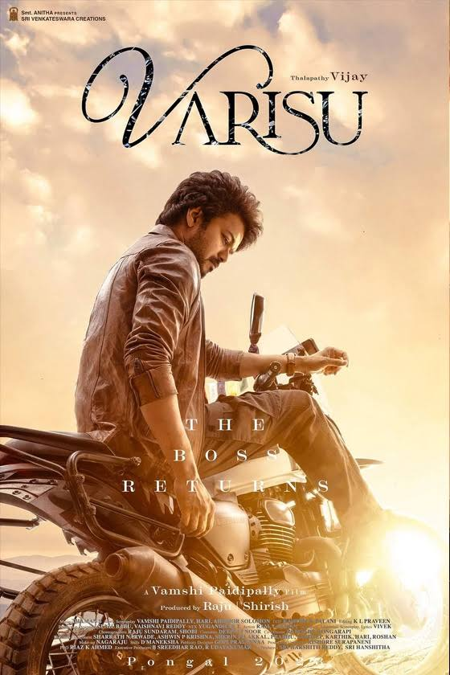

Varisu Review: A Regular Formulaic Family Drama

Rating:⭐⭐⭐
I finally watched Varisu, and I must say one thing, watch this only for Vijay. Honestly to summarize this movie it’s a sandwich
of familiar Telugu movies. Dance venuma, dance irukku, fight venuma, fight irukku, Vijay sir body language venuma, adhi irukku,
finally emotions, adhi irukku. If they’d worked hard on the writing a bit more and made the second half less tolerable, Varisu
would’ve been a perfect family entertainer. Thamans music was above average but the BGM was wild. I really don’t expect Thaman the
to pull off bangers for Thalapathy! Rashmika appearing in less scenes was actually a good decision, since that would just stretch
movie and make it even more boring. Supporting cast was average in some sorts, which is expected in family dramas, BUT WHERE WAS
KHUSHBU?!!! I feel like they really should’ve deleted a lot of unnecessary scenes and put the KHUSHBU scenes in. Other than that,
Varisu is definitely a decent film with no big surprises.